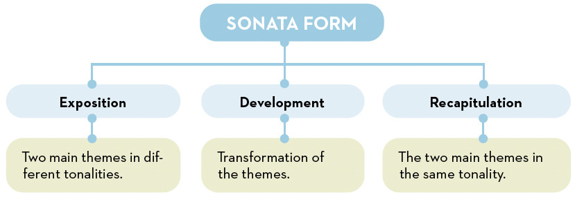
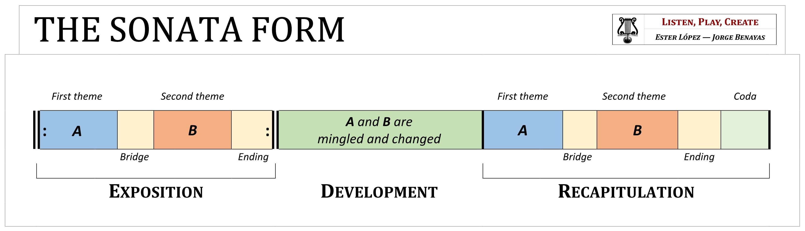

The Sonata
In Classical-period instrumental music, new genres emerged that would prove fundamental to understanding all instrumental music of later periods. The most commonly used forms are as follows:
- Sonata: composition for one or two instruments (often including the piano) in several movements.
- Concerto: composition in which a solo instrument performs against the orchestra.
- Symphony: large-scale work for a full orchestra, also comprising several movements (usually four).
- Chamber music: intimate music for small ensembles (quartets, trios, etc.), performed in small venues, ideal for a small number of instruments.
The sonata's confusion
When we talk about the sonata, there is often a great deal of confusion. We must distinguish between the sonata and sonata form.
- A sonata is a complete musical work (a genre) for one or a few instruments, usually comprising several movements.
- Sonata form is the specific structure typically used in the first movement of such sonatas, but also in symphonies, string quartets and concertos, and is characterised by its exposition, development and recapitulation sections.


In other words:
- Think of the sonata as a novel comprising several chapters (the complete work).
- The sonata form is like the structure of a specific chapter within that novel (Exposition, Development, Recapitulation).
WE LISTEN AND WE DON'T JUDGE: SONATA - CONCERTO - SYMPHONY - CHAMBER MUSIC
🎧 Listening 7 - Sonata
Mozart - Piano Sonata n.º 16 in C
- As this is a sonata, how many instruments play the piece? Which instrument is it?
- Identify the three parts of the sonata form. You can check your answer against the video.
🎧 Listening 8 - Concert
Mozart – Clarinet Concerto in A major. II. Adagio
- Why do we know it’s a concerto?
- Classical-era concertos are usually divided into three movements. What is the usual tempo of these three movements?
🎧 Listening 9 - Symphony
Mozart – Symphony No. 40 in G minor – I. Molto allegro
- What is the fundamental difference between this symphony and a concerto?
- Which family of instruments in the classical orchestra is responsible for carrying the main melodic line at the start of the first movement of Symphony No. 40?
- What form does this work take? Can you identify the three sections? Check your answer against the video.
🎧 Listening 10 - Chamber Music
J. Haydn – String Quartet in D minor – ‘The Emperor’ – IV. Finale
- Why do we classify this piece as chamber music rather than symphonic music?
- What sort of chamber ensemble (number and type of instruments) is playing? Check your answer against the video.